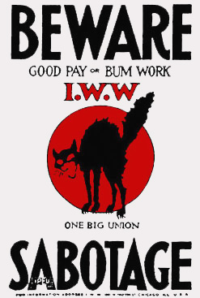

Its Necessity In The Class War
 I am not going to attempt to justify
sabotage on any moral ground. If the workers consider that
sabotage is necessary, that in itself makes sabotage moral. Its
necessity is its excuse for existence. And for us to discuss the
morality of sabotage would be as absurd as to discuss the
morality of the strike or the morality of the class struggle
itself. In order to understand sabotage or to accept it at all it
is necessary to accept the concept of class struggle. If you
believe that between the workers on the one side and their
employers on the other there is peace, there is harmony such as
exists between brothers, and that consequently whatever strikes
and lockouts occur are simply family squabbles; if you believe
that a point can be reached whereby the employer can get enough
and the worker can get enough, a point of amicable adjustment of
industrial warfare and economic distribution, then there is no
justification and no explanation of sabotage intelligible to
you.
I am not going to attempt to justify
sabotage on any moral ground. If the workers consider that
sabotage is necessary, that in itself makes sabotage moral. Its
necessity is its excuse for existence. And for us to discuss the
morality of sabotage would be as absurd as to discuss the
morality of the strike or the morality of the class struggle
itself. In order to understand sabotage or to accept it at all it
is necessary to accept the concept of class struggle. If you
believe that between the workers on the one side and their
employers on the other there is peace, there is harmony such as
exists between brothers, and that consequently whatever strikes
and lockouts occur are simply family squabbles; if you believe
that a point can be reached whereby the employer can get enough
and the worker can get enough, a point of amicable adjustment of
industrial warfare and economic distribution, then there is no
justification and no explanation of sabotage intelligible to
you.
Sabotage is one weapon in the arsenal of labor to fight its side of the class struggle. Labor realizes, as it becomes more intelligent, that it must have power in order to accomplish anything; that neither appeals for sympathy nor abstract rights will make for better conditions. For instance, take an industrial establishment such as a silk mill, where men and women and little children work ten hours a day for an average wage of between six and seven dollars a week. Could any one of them, or a committee representing the whole, hope to induce the employer to give better conditions by appealing to his sympathy, by telling him of the misery, the hardship and the poverty of their lives; or could they do it by appealing to his sense of justice? Suppose that an individual working man or woman went to an employer and said, "I make, in my capacity as wage worker in this factory, so many dollars' worth of wealth every day and justice demands that you give me at least half." The employer would probably have him removed to the nearest lunatic asylum. He would consider him too dangerous a criminal to let loose on the community! It is neither sympathy nor justice that makes an appeal to the employer. But it is power. If a committee can go to the employer with this ultimatum: "We represent all the men and women in this shop. They are organized in a union as you are organized in a manufacturers' association. They have met and formulated in that union a demand for better hours and wages and they are not going to work one day longer unless they get it. In other words, they have withdrawn their power as wealth producers from your plant and they are going to coerce you by this withdrawal of their power; into granting their demands," that sort of ultimatum served upon an employer usually meets with an entirely different response; and if the union is strongly enough organized and they are able to make good their threat they usually accomplish what tears and pleadings never could have accomplished.
We believe that the class struggle existing in society is expressed in the economic power of the master on the one side and the growing economic power of the workers on the other side meeting in open battle now and again, but meeting in continual daily conflict over which shall have the larger share of labor's product and the ultimate ownership of the means of life. The employer wants long hours, the intelligent workingman wants short hours. The employer is not concerned with the sanitary conditions in the mill, he is concerned only with keeping the cost of production at a minimum; the intelligent workingman is concerned, cost or no cost, with having ventilation, sanitation and lighting that will be conducive to his physical welfare. Sabotage is to this class struggle what the guerrilla warfare is to the battle. The strike is the open battle of the class struggle, sabotage is the guerrilla warfare, the day-by-day warfare between two opposing classes.
Sabotage was adopted by the General Federation of Labor of France in 1897 as a recognized weapon in their method of conducting fights on their employers. But sabotage as an instinctive defense existed long before it was ever officially recognized by any labor organization. Sabotage means primarily: the withdrawal of efficiency. Sabotage means either to slacken up and interfere with the quantity, or to botch in your skill and interfere with the quality, of capitalist production or to give poor service. Sabotage is not physical violence, sabotage is an internal, industrial process. It is something that is fought out within the four walls of the shop. And these three forms of sabotage -- to affect the quality, the quantity and the service are aimed at affecting the profit of the employer. Sabotage is a means of striking at the employer's profit for the purpose of forcing him into granting certain conditions, even as workingmen strike for the same purpose of coercing him. It is simply another form of coercion.
There are many forms of interfering with efficiency, interfering with quality and the quantity of production: from varying motives -- there is the employer's sabotage as well as the worker's sabotage. Employers interfere with the quality of production, they interfere with the quantity of production, they interfere with the supply as well as with the kind of goods for the purpose of increasing their profit. But this form of sabotage, capitalist sabotage, is antisocial, for the reason that it is aimed at the good of the few at the expense of the many, whereas working-class sabotage is distinctly social, it is aimed at the benefit of the many, at the expense of the few.
Working-class sabotage is aimed directly at "the boss" and at his profits, in the belief that that is the solar plexus of the employer, that is his heart, his religion, his sentiment, his patriotism. Everything is centered in his pocket book, and if you strike that you are striking at the most vulnerable point in his entire moral and economic system.
 Sabotage, as it aims at the quantity, is a very old thing, called by the Scotch "ca canny". All intelligent workers have tried it at some time or other when they have been compelled to work too hard and too long. The Scotch dockers had a strike in 1889 and their strike was lost, but when they went back to work they sent a circular to every docker in Scotland and in this circular they embodied their conclusions, their experience from the bitter defeat. It was to this effect, "The employers like the scabs, they have always praised their work, they have said how much superior they were to us, they have paid them twice as much as they have ever paid us; now let us go back to the docks determined that since those are the kind of workers they like and that is the kind of work they endorse we will do the same thing. We will let the kegs of wine go over the docks as the scabs did. We will have great boxes of fragile articles drop in the midst of the pier as the scabs did. We will do the work just as clumsily, as, slowly, as destructively, as the scabs did. And we will see how long our employers can stand that kind of work." It was very few months until through this system of sabotage they had won everything they had fought for and not been able to win through the strike. This was the first open announcement of sabotage in an English-speaking country.
I have heard of my grandfather telling how an old fellow came to work on the railroad and the boss said, "Well, what can you do?"
"I can do 'most anything," said he -- a big husky fellow.
"Well," said the boss, "can you handle a pick and a shovel?"
"Oh, sure. How much do you pay on this job?"
"A dollar a day."
"Is that all? Well, -- all right. I need the job pretty bad. I guess I will take it." So he took his pick and went leisurely to work. Soon the boss came along and said:
"Say, can't you work any faster than that?"
"Sure I can."
"Well, why don't you?"
"This is my dollar-a-day clip."
"Well," said the boss, "let's see what the $1.25-a-day clip looks like."
That went a little better. Then the boss said, "Let's see what the $1.50-a-day clip looks like." The man showed him. "That was fine," said the boss, "well, maybe we will call it $1.50 a day." The man volunteered the information that his $2-a-day clip was "a hummer". So, through this instinctive sort of sabotage this poor obscure workingman on a railroad in Maine was able to gain for himself an advance from $1 to $2 a day. We read of the gangs of Italian workingmen, when the boss cuts their pay -- you know, usually they have an Irish or American boss and he likes to make a couple of dollars a day on the side for himself, so he cuts the pay of the men once in a while without consulting the contractor and pockets the difference. One boss cut them 25 cents a day. The next day he came on the work, to find that the amount of dirt that was being removed had lessened considerably. He asked a few questions: "What's the matter?"
"Me no understan' English" -- none of them wished to talk.
Well, he exhausted the day going around trying to find one person who could speak and tell him what was wrong. Finally he found one man, who said, "Well, you see, boss, you cutta da pay, we cutta da shob."
That was the same form of sabotage -- to lessen the quantity of production in proportion to the amount of pay received. There was an Indian preacher who went to college and eked out an existence on the side by preaching. Somebody said to him, "John, how much do you get paid?"
"Oh, only get paid $200 a year."
"Well, that's damn poor pay, John."
"Well," he said, "Damn poor preach!"
That, too, is an illustration of the form of sabotage that I am now describing to you, the "ca canny" form of sabotage, the "go easy" slogan, the "slacken up, don't work so hard" species, and it is a reversal of the motto of the American Federation of Labor, that most "safe, sane and conservative" organization of labor in America. They believe in "a fair day's wage for a fair day's work." Sabotage is an unfair day's work for an unfair day's wage. It is an attempt on the part of the worker to limit his production in proportion to his remuneration. That is one form of sabotage.
The second form of sabotage is to deliberately interfere with the quality of the goods. And in this we learn many lessons from our employers, even as we learn how to limit the quantity. You know that every year in the western part of this United States there are fruits and grains produced that never find a market; bananas and oranges rot on the ground, whole skiffs of fruits are dumped into the ocean. Not because people do not need these foods and couldn't make good use of them in the big cities of the east, but because the employing class prefer to destroy a large percentage of the production in order to keep the price up in cities like New York, Chicago, Baltimore and Boston. If they sent all the bananas that they produce into the eastern part of the United States we would be buying bananas at probably three for a cent. But by destroying a large quantity, they are able to keep the price up to two for 5c. And this applies to potatoes, apples, and very many other staple articles required by the majority of people. Yet if the worker attempts to apply the same principle, the same theory, the same tactic as his employer we are confronted with all sorts of finespun moral objections.